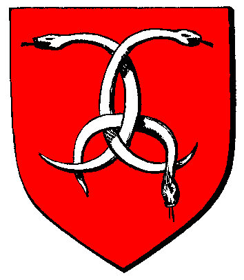

| Übersicht,
Vorschläge |
|
Kampf/Armeen/Monster - Bären in SW (170  ) )
|
Kantar
 |
So ist es momentan:
Es gibt keine Bären in SW
So soll es werden:
Es wird Bären geben... kleine Bären (150lp 55 skill 9ner rüstung?), große Bären (300lp 65 skill 12wer Rüstung
Im Winter Eisbären (350 lp 75 Skill 15ner Rüstung). Nester Bärenhöhle.
Vorteile für das Spiel:
Kleine Bereicherung fürs Spiel.
Nachteile für das Spiel:
Wieder mehr Arbeit für die SL oder wen auch immer.
Mögliche Problematiken:
Programieraufwand
Sonstiges:
*....* |
17.09.14 18:48
 |
|
Markus Feuernacht
 |
Die Idee finde ich gut, spielt auch ein wenig in die "alle Monster die es laut Hilfe schon gibt einführen".
Je nach dem wie es Implementiert ist, könnte es mit dem Eintragen in der Datenbank und dem setzten einiger Initialen Nester getan sein.
Ich bin gespannt und hoffe :) |
17.09.14 19:09
|
|
Wolf ni Volon
 |
Ja, ein paar neue Monster wäre doch schon was.
Vor allem der Wechsel im Winter. Wenn das nicht geht, sollte es zumindest auf den Eisinseln die Eisbären geben.
Abwechslung tut einfach Not |
17.09.14 19:57
|
|
Torkon
 |
Finde ich auch gut. Vielleicht auch noch Hasen, die man jagen kann und vielleicht ne Besonderheit bei deren erfolgreicher Erlegung der Jäger ein nützliches Item bekommt. |
17.09.14 20:26
|
|
Altan Stormwind
 |
Kuchen? |
17.09.14 20:39
|
|
Kittin Silberfang
 |
Äh ja und warum nicht auch noch Elefanten oder Seelöwen oder Papageien oder Schildkröten oder Bienen oder Hummer oder Wölfe oder Katzen oder Schlangen oder Koalas oder Quallen oder Büffel oder Nilpferde oder Aale oder Biber oder Hunde oder Goldfische oder Adler oder Kakerlaken oder Dodos oder am besten alles zusammen.
Ernsthaft: Schaut ins Grafikpaket, gibt dort noch ein Haufen nette Viecher, die man integrieren könnte.
Oder Schnaken oder Eidechsen oder ne Milkakuh.... |
17.09.14 20:42
|
|
Krâtos
 |
Gibt Bärenfelle. |
17.09.14 22:20
|
|
Alberix, Sohn des Duglim
 |
Ausserdem bindet uns Kantar seit Jahren einen Bären auf!
....aber wie wäre es mit Werkamelen? Die sehen aus wie Kara-Kamele und wenn man die plündern will, verwandeln sie sich in ....also....äh.....Werkamele? |
17.09.14 23:15
|
|
| Jolina (RIP) |
Das aber falsch "Im Winter Eisbären", nur in der Höhle, die halten Winterschlaf :p
Würde das eher Regional abhängig machen ^^ |
21.09.14 11:34
|
|
Seppl der Kleine
 |
Es ist doch egal, welche neuen Monster es gibt, hauptsache es tut sich endlich was. |
28.09.14 17:13
|
|
Altan Stormwind
|
lass dir doch keinen Baeren aufbinden... |
28.09.14 17:29
|
|
Baldur McMulenberc
 |
Und der Oberbär der Bärengruppe heißt dann Walnut, und zieht dir 1 Rüstung je Angriff? Dafür! |
28.09.14 19:07
|
|
Alessa Imret Eilistraee
 |
Elefanten gibt´s... magst einen haben? ^^ |
30.09.14 17:54
|
|
Übersicht,
Vorschläge
|